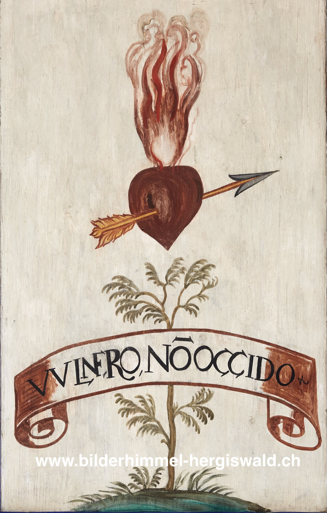

Süd 74 – Das liebende Herz

Motto: VULNERO, NON OCCIDO.
Übersetzung: Ich verwunde, aber töte nicht.
Erklärung: Auf das gemeinsame Herz Christi und Marias folgt hier das flammende Herz der Gläubigen. Es steht dem durchbohrten Herzen in der Reihe bewusst gegenüber. Gemeint ist nun nicht mehr das Leiden Marias selbst, sondern die Antwort der Menschen: ein Herz, das von Liebe ergriffen und innerlich entzündet ist.
Solche brennenden oder von einem Pfeil getroffenen Herzen begegnen in der Barockzeit häufig. Sie stehen für die Seele, die von göttlicher Liebe erfasst wird. Ein Pfeil trifft das Herz, verletzt es gewissermassen, aber nicht, um es zu zerstören, sondern um es zu verwandeln. Barock gesagt: eine ziemlich treffsichere Form der Gnade.
Genau das bringt auch das Motto VULNERO, NON OCCIDO zum Ausdruck: „Ich verwunde, aber ich töte nicht.“ Das Herz wird von Marias Liebespfeil getroffen und gerade dadurch für die Gottesliebe geöffnet. Die Wunde ist hier kein Zeichen von Schaden, sondern von Nähe, Barmherzigkeit und innerer Bewegung.
Das Emblem zeigt also, wie Maria auf die Gläubigen wirkt: nicht hart, nicht zerstörerisch, sondern eindringlich und liebevoll. Wer von ihrem Pfeil getroffen wird, verliert nicht das Leben, sondern gewinnt gewissermassen ein neues Herz.
Eine ähnliche Vorstellung begegnet auch in Ost 28 und Ost 50. Dort wird das Herz ebenfalls nicht verletzt, um es zu vernichten, sondern um es an sich zu ziehen. Die Bildsprache mag heute ungewohnt wirken, ist aber im Kern erstaunlich klar: Liebe trifft, bewegt und verändert.